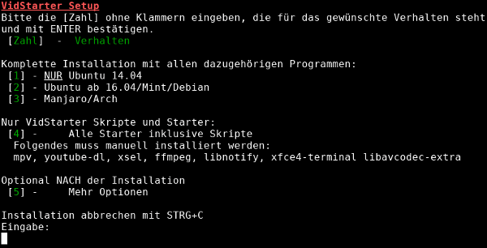
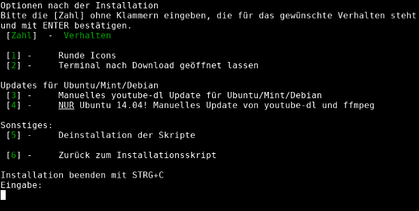

VidStarter
Dieser Artikel wurde für die folgenden Ubuntu-Versionen getestet:
Ubuntu 16.04 Xenial Xerus
Ubuntu 14.04 Trusty Tahr
Zum Verständnis dieses Artikels sind folgende Seiten hilfreich:
Bei VidStarter  handelt es sich um eine Sammlung von Skripten, mit denen externe Programme genutzt werden, um Videos aus dem Internet direkt im Mediaplayer mpv wiederzugeben. Über grafische Starter können Clips in verschiedenen Qualitätsstufen angefordert werden. VidStarter wurde von Franz Xaver Mühlbauer entwickelt.
handelt es sich um eine Sammlung von Skripten, mit denen externe Programme genutzt werden, um Videos aus dem Internet direkt im Mediaplayer mpv wiederzugeben. Über grafische Starter können Clips in verschiedenen Qualitätsstufen angefordert werden. VidStarter wurde von Franz Xaver Mühlbauer entwickelt.
VidStarter verwendet xsel, um aus dem Zwischenspeicher einen Link zu einem Video an youtube-dl zu übergeben. Dieses Programm sorgt für das Herunterladen in der gewählten Qualität, mit libnotify werden Benachrichtigungen zum Verlauf ausgegeben, mpv gibt das Video dann wieder. Es ist auch möglich, die Titel zu speichern, oder nur die Audiospur zu extrahieren. Standardmäßig verwenden die Skripte eine experimentelle youtube-dl-Option zur Umgehung von Geoblocking.
Alternative Programme sind in den Artikeln Streaming und Streams speichern zu finden.
Installation¶
VidStarter ist nicht in den offiziellen Paketquellen enthalten.
Skriptinstallation¶
Es wird empfohlen, zuvor aus den Quellen oder anderweitig installierte Versionen von youtube-dl, sowie bei Nutzung von Ubuntu 14.04 mpv und libav zu entfernen.
Das aktuelle auf der Entwicklerseite unter "Download/Updates" verlinkte .tar.gz-Archiv wird von einer Downloadseite (NextCloud von Disroot.org) heruntergeladen (z.B. ins Homeverzeichnis).
Hinweis!
Fremdsoftware kann das System gefährden.
Dann entpackt[3] man die Archivdatei und wechselt in den entstandenen VidStarter-Ordner. Nun das Installationsskript ausführbar[4] machen und im Terminal starten:
./ vidstarter-install-skript.sh
Verwendete Software¶
Verwendet und standardmäßig automatisch vom Skript installiert werden die Pakete
xsel
libnotify-bin
xfce4-terminal
libavcodec-extra
 mit apturl
mit apturl
Paketliste zum Kopieren:
sudo apt-get install xsel libnotify-bin xfce4-terminal libavcodec-extra
sudo aptitude install xsel libnotify-bin xfce4-terminal libavcodec-extra
Unter 16.04 aus den offiziellen Quellen auch
mpv
ffmpeg
mit apturl
Paketliste zum Kopieren:
sudo apt-get install mpv ffmpeg
sudo aptitude install mpv ffmpeg
Zudem verwendet das Skript eine aktuelle Version von youtube-dl, die heruntergeladen und für die systemweite Nutzung automatisch als 32- bzw. 64-bit-Variante nach /usr/local/bin installiert wird.
Zusätzliche Fremdquellen für 14.04¶
mpv¶
Da die in den Quellen für Trusty Tahr vorhandene Version von mpv veraltet ist, wird vom Skript automatisch ein PPA eingerichtet und verwendet.
Adresszeile zum Hinzufügen des PPAs:
ppa:mc3man/mpv-tests
Hinweis!
Zusätzliche Fremdquellen können das System gefährden.
Ein PPA unterstützt nicht zwangsläufig alle Ubuntu-Versionen. Weitere Informationen sind der  PPA-Beschreibung des Eigentümers/Teams mc3man zu entnehmen.
PPA-Beschreibung des Eigentümers/Teams mc3man zu entnehmen.
Damit Pakete aus dem PPA genutzt werden können, müssen die Paketquellen neu eingelesen werden.
Daraus wird das Paket installiert:
mpv
mit apturl
Paketliste zum Kopieren:
sudo apt-get install mpv
sudo aptitude install mpv
ffmpeg¶
Außerdem wird unter 14.04 eine aktuelle Version von ffmpeg benötigt, die aus den Linux Static Builds bezogen wird; es besteht auch die Möglichkeit, das PPA trusty-media  zu verwenden, davon wird aber selbst vom Entwickler abgeraten.
zu verwenden, davon wird aber selbst vom Entwickler abgeraten.
Erläuterungen zu den jeweiligen Installationsmöglichkeiten¶
Das Installationsskript bietet verschiedene Optionen zum Umfang der Installationen, wofür die entsprechende Nummer, die für das gewünschte Verhalten steht, ohne Klammern eingeben und dann mit ⏎ bestätigen werden muss. Es werden Root-Rechte [5] benötigt.
Hinweis:
Solange noch nichts installiert worden ist, kann Installationsskript mit der Tastenkombination Strg + C gestoppt werden.
Mit den Optionen 1, 2 und 4 werden die Skripte nach /usr/local/bin/, die Icons nach /usr/share/icons/ und die Programmstarter nach /usr/share/applications/ installiert. Bei Verwendung von Nummer 5 erscheint ein Menü mit Extra-Optionen.
Im Folgenden werden die verschiedenen Installationsmöglichkeiten mit ihrer jeweiligen Voraussetzungen sowie den Aktualisierungsoptionen näher erläutert:
|  |
| Original-Bildschirmfoto des Installationsskriptes, Bild-Quelle: VidStarter-Projektseite |
NUR Ubuntu 14.04:
Achtung!
Bei Verwendung werden die erzeugten PPA-Einträge nach der Installation vom Skript nicht wieder gelöscht. Der Entwickler empfiehlt die Unteroption 1.
(Beta-)FFmpeg und youtube-dl werden aus Fremdquellen, mpv wird aus einem PPA installiert; empfohlen:
Update von youtube-dl und ffmpeg unter den Extra-Optionen
FFmpeg und mpv werden aus aus verschiedenen PPAs installiert, youtube-dl aus einer Fremdquelle; nicht empfohlen!
Update von youtube-dl unter den Extra-Optionen
Ubuntu ab 16.04, Linux Mint, Debian: mit manueller youtube-dl-Installation:
Update von youtube-dl unter den Extra-Optionen
Verwendbar für die beiden Distributionen Manjaro und Arch; irrelevant für Ubuntu
Installation der VidStarter-Skripte ohne die oben angegebenen benötigten externen Programme.
Je nach installierter Ubuntu-Version (siehe dafür die jeweiligen Erläuterungen zu den vorstehend aufgeführten Nummern) müssen die oben angegebenen Pakete entweder aus den offiziellen Paketquellen oder teilweise auch aus Fremdquellen installiert sein.
Hinweis:
Allerdings sollten gemäß der jeweiligen Erläuterungen youtube-dl auf jeden Fall, sowie unter 14.04 mpv und ffmpeg, nicht aus den offiziellen Paketquellen installiert werden.
Updates bei neuen VidStarter-Versionen werden installiert, indem man die neue Version herunterlädt und dort im Installationsskript die Option 4 wählt.
Mit dieser Option lässt sich VidStarter unter beliebigen Linux-Distributionen hinzufügen, wenn die benötigten Programme manuell installiert wurden.
Mehr Optionen
 Original-Bildschirmfoto des Untermenüs, Bild-Quelle: VidStarter-Projektseite Dieses Auswahlmenü erscheint auch automatisch nach der Installation mit Option 1-4.
Runde Icons; nur nach Installation der Skripte möglich
Terminals nach Downloads von Videos oder Audio geöffnet lassen
Manuelles youtube-dl-Update für Ubuntu, Mint, Debian, die aktuelle youtube-dl-Version wird heruntergeladen und systemweit nach /usr/local/bin/ verschoben, die vorhandene Datei wird überschrieben.
Nur Ubuntu 14.04! Manuelles Update von youtube-dl und ffmpeg; nur für Installation mit Nummer 1 mit Unterpunkt 1: ffmpeg wird als Linux Static Build automatisch als 32- bzw. 64-bit-Variante heruntergeladen und systemweit nach /usr/local/bin/ verschoben, youtube-dl wird heruntergeladen und ebenfalls systemweit nach /usr/local/bin/ verschoben; die entsprechenden vorhandenen Dateien werden überschrieben
Deinstallation der VidStarter-Dateien
Bedienung¶
Videos werden gestartet, indem der entsprechende Link kopiert und dann der gewünschte Starter  -geklickt wird.
-geklickt wird.
Der Pfad zum Menüeintrag für VidStarter lautet z.B. bei Lubuntu "Unterhaltungsmedien -> VidStarter", in anderen Ubuntu-Varianten mit einen Anwendungsmenü ggf. auch "Multimedia -> VidStarter", unter Unity kann man die Starter im Dash aufrufen. Je nach Hardware und Internetverbindung erscheint kurz darauf eine Benachrichtigung mit dem Titel des Videos und nach ein paar Sekunden sollte sich mpv mit dem Inhalt in der gewünschten Qualität öffnen.
Die Videos könne auch heruntergeladen oder die Audiospur als mp3 gespeichert werden, das ist auch für Playlisten möglich.Dazu wird das XFCE4-Terminal verwendet, um die Datei im Homeverzeichnis abzulegen, oder mit ffmpeg die Audiospur als mp3-Datei zu speichern.
Falls man jedoch einen anderen Zielordner als das Homeverzeichnis haben möchte, so muss youtube-dl dafür ein Parameter übergeben werden. Dies funktioniert, indem man entweder die Konfigurationsdatei von youtube-dl entsprechend anpasst oder aber die beiden Skripte vidstarter_audio.sh und vidstarter_download.sh. Beispiele dafür stehen in der Beispielkonfigurationsdatei von youtube-dl.
Hinweis:
Falls man möchte, dass sich das XFCE4-Terminal nach Abschluss des Downloads nicht automatisch schließt, kann man dies im Installationsskript bei "Mehr Optionen" auswählen.
Die Skripte können auch auf der Kommandozeile gestartet werden [2], es muss lediglich vorher ein Link entweder per
Strg +
C oder per  -Klick→"Kopieren" in die Zwischenablage eingefügt worden sein. Die Speicherorte der Skripte befinden sich in der Umgebungsvariable
-Klick→"Kopieren" in die Zwischenablage eingefügt worden sein. Die Speicherorte der Skripte befinden sich in der Umgebungsvariable PATH gespeicherten Pfaden und können daher von überall durch die Eingabe des entsprechenden Namens gestartet werden, z.B. mit:
vidstarter_streamdefault.sh
Verwendbare Skripte¶
| VidStarter-Skripte | |
| Skriptname | Funktion |
| vidstarter_audio.sh | Audiospur als mp3 speichern |
| vidstarter_download.sh | Videos in bestmöglicher Qualität speichern |
| vidstarter_stream360p.sh | Videos vorzugsweise in 360p oder niedriger öffnen |
| vidstarter_stream480p.sh | Videos vorzugsweise in 480p oder niedriger öffnen |
| vidstarter_stream720p.sh | Videos vorzugsweise in 720p oder niedriger öffnen |
| vidstarter_stream1080p.sh | Videos vorzugsweise in 1080p oder niedriger öffnen |
| vidstarter_streambest.sh | Youtube-Videos in bester Qualität, vorzugsweise 60FPS, öffnen |
| vidstarter_streamdefault.sh | Videos mit viel Cache und bester Qualität (Youtube 720p) öffnen |
Momentan können die verschiedenen Qualitäten für folgende Seiten verwendet werden: Youtube, Vimeo, Twitch, Dailymotion, Dmax. Bei anderen wird immer die bestmögliche Qualität verwendet.
Auf der Projektseite wird die Bedienung ausführlich mit Bildern erklärt. Dort sowie über die Links kommt man außerdem zu drei Videobeispielen, welche das Abspielen und Herunterladen erklären.
Hinweis:
Zu beachten ist, dass Konfigurationsdateien von youtube-dl und mpv Einfluss auf die Ergebnisse von VidStarter haben können. Falls Probleme auftreten, diese vorsichtshalber temporär deaktivieren und dann weiter testen.
Deinstallation¶
Das Installationsskript hat eine Deinstallationsroutine unter "Mehr Optionen" oder man entfernt VidStarter, indem die vidstarter...-Dateien aus /usr/local/bin/, /usr/share/icons/ und /usr/share/applications/ händisch gelöscht werden (Rootrechte nötig).
Links¶
Intern¶
Streaming
 Grundlegendes zum Thema; Audio- und Videostreams z.B. mittels Browser-Plugins abspielen
Grundlegendes zum Thema; Audio- und Videostreams z.B. mittels Browser-Plugins abspielenStreams speichern
ÜbersichtsartikelInternetradio
ÜbersichtsartikelInternet-TV
Übersichtsartikel
- Erstellt mit Inyoka
-
 2004 – 2017 ubuntuusers.de • Einige Rechte vorbehalten
2004 – 2017 ubuntuusers.de • Einige Rechte vorbehalten
Lizenz • Kontakt • Datenschutz • Impressum • Serverstatus -
Serverhousing gespendet von